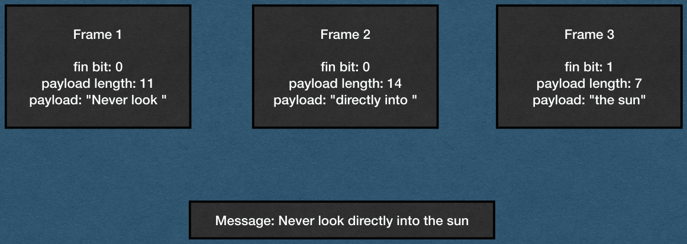
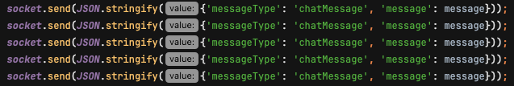
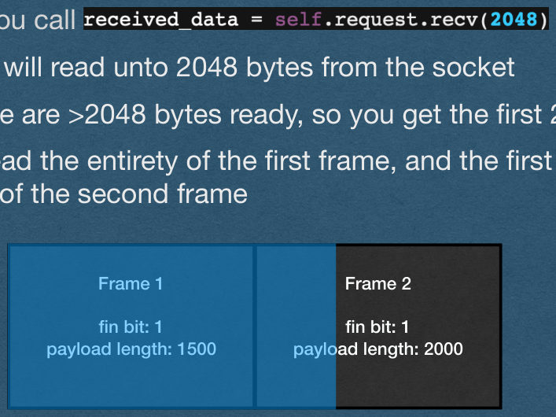
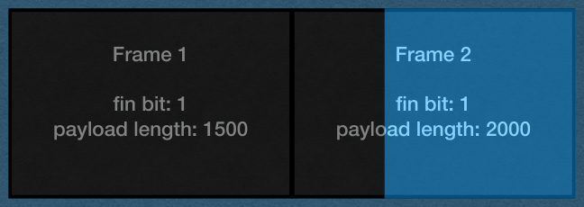
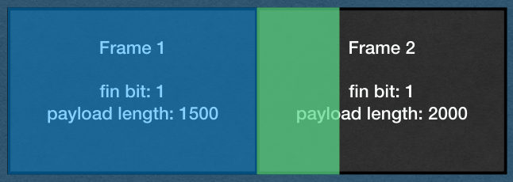
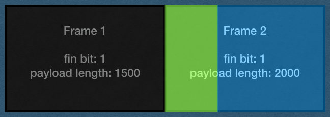

WebSocket Buffering
CSE312 — Web Development
WebSocket Buffers
Slide 2

Special Cases
- Let’s talk about 3 special cases that will come up when implementing WebSockets
- Buffering large frames
- Multiple frames per message using the fin bit and continuation frames
- Multiple frames being sent back-to-back messages
Buffering Large Frames
- You will sometimes receive WebSocket frames that are large enough that they need to be buffered
- Buffering frames is very similar to buffering HTTP requests
- When receiving a WebSocket Frame:
- Read bytes from the socket
- Parse the headers
- Read the payload length from the headers
- Keep reading bytes from the socket until you’ve read the entire frame
- Payload length does not include the header bytes
- Process the request
Continuation Frames
- You will sometimes receive very large messages from client that will be sent in multiple frames (>131,000 bytes in Chrome)
- Fin bit will be 0 until the last frame
- opcode will be 0000 for all but the first frame
- Payload length is only the length of that frame
Continuation Frames
- When you read a frame with a fin bit of 0:
- Keep reading frames until you read a frame with a fin bit of 1
- Combine the payload of all frames, then process the entire message
Continuation Frames
- Example of one message sent over 3 frames
Frame 1
Frame 2
Frame 3
fin bit: 0
payload length: 11
payload: “Never look”
fin bit: 0
payload length: 14
payload: “directly into”
fin bit: 1
payload length: 7
payload: “the sun”
Message: Never look directly into the sun

Back-to-back Frames
- Multiple WebSocket frames can be sent back-to-back on the same connection
- Especially when continuation frames are used
- If you read more bytes than you expect, you have read the headers of the next frame
- Use the payload length to know how many bytes to expect
- If you read < payload length bytes, you should buffer
- If you read > payload length bytes, store the extra bytes as the start of the next frame
Back-to-back Frames
- To test for back-to-back frames:
- Edit the front end JavaScript to send a message multiple times when the user sends a message
- Make sure each message is duplicated the correct number of times
- With this modification, every sent message should appear in chat 5 times

Back-to-back Frames
- Example
- Two frames are sent by the client back-to-back
- The first frame has a payload length of 1500
- 1508 total bytes including headers
- The first frame has a payload length of 2000
- 2008 total bytes including headers
- The first frame has a payload length of 1500
- Both frames have been processed by TCP and are ready to be read
Frame 1
Frame 2
fin bit: 1
payload length: 1500
fin bit: 1
payload length: 2000
Back-to-back Frames
- There are 3516 bytes ready to be read from the socket
- And you call
- This will read unto 2048 bytes from the socket
- There are >2048 bytes ready, so you get the first 2048
- You read the entirety of the first frame, and the first 540 bytes of the second frame
Frame 1
Frame 2
fin bit: 1
payload length: 1500
fin bit: 1
payload length: 2000

Back-to-back Frames
- If you’re not careful, you loop will go back to the socket and read the remaining 1468 bytes of the second frame and attempt to parse it
- Since you start in the middle of the frame, you will run header parsing code on masked payload bytes
- You will get errors!
Frame 1
Frame 2
fin bit: 1
payload length: 1500
fin bit: 1
payload length: 2000

Back-to-back Frames
- When parsing the first frame:
- Use the payload length to detect that you’ve read too many bytes
- Store the extra bytes in a separate variable
- Parse the first frame
Frame 1
Frame 2
fin bit: 1
payload length: 1500
fin bit: 1
payload length: 2000

Back-to-back Frames
- When you finish processing the first frame, start parsing the second frame with the bytes stored in the operate variable
- Check the payload length and buffer if needed to read the rest of the frame
- Recommendation: Use your top-level loop to do this so you can handle any number of back-to-back frames
Frame 1
Frame 2
fin bit: 1
payload length: 1500
fin bit: 1
payload length: 2000
